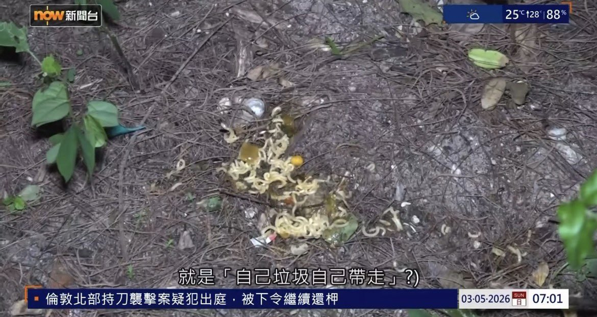

你好，这是中国香港
香港不讲日本法律，也不讲美国法律
香港依据《中华人民共和国宪法》港人治港，不受外国政权干预；讲根据中华人民共和国全国人民代表大会制定的《基本法》授权香港立法机关依照《基本法》制定的香港法律
根据香港法律第208A章《郊野公园及特别地区规例》第12(1)条；香港法律第570章 《定额罚款(公众地方洁净及阻碍)条例》
在郊野公园内乱抛垃圾、随地吐痰或弃置废物，除非将其弃置在为此而提供的箱或容器内，否则可处定额罚款HK$3,000
而根据新闻报道，游客非常明显的将方便面随意弃置于普通地面上，而不是为弃置于为此提供的箱或容器内，这已经违反了香港法律，因此发出罚款

香港不讲日本法律，也不讲美国法律
香港依据《中华人民共和国宪法》港人治港，不受外国政权干预；讲根据中华人民共和国全国人民代表大会制定的《基本法》授权香港立法机关依照《基本法》制定的香港法律
根据香港法律第208A章《郊野公园及特别地区规例》第12(1)条；香港法律第570章 《定额罚款(公众地方洁净及阻碍)条例》
在郊野公园内乱抛垃圾、随地吐痰或弃置废物，除非将其弃置在为此而提供的箱或容器内，否则可处定额罚款HK$3,000
而根据新闻报道，游客非常明显的将方便面随意弃置于普通地面上，而不是为弃置于为此提供的箱或容器内，这已经违反了香港法律，因此发出罚款

@FoxRed695449 @laozhouhengmei 这是哪个国家呀？简直野蛮执法！我说一下日本和美国的情况，在野外露营地都设有大型的垃圾桶。可燃垃圾扔垃圾桶里，不燃垃圾装在塑料袋里放在旁边。如果没有按规定扔进垃圾桶或者收进垃圾袋。会有警告，但绝对不会罚款。警告写有警告牌，有一些游客没看到也不会罚款。勒令你自己打扫干净。